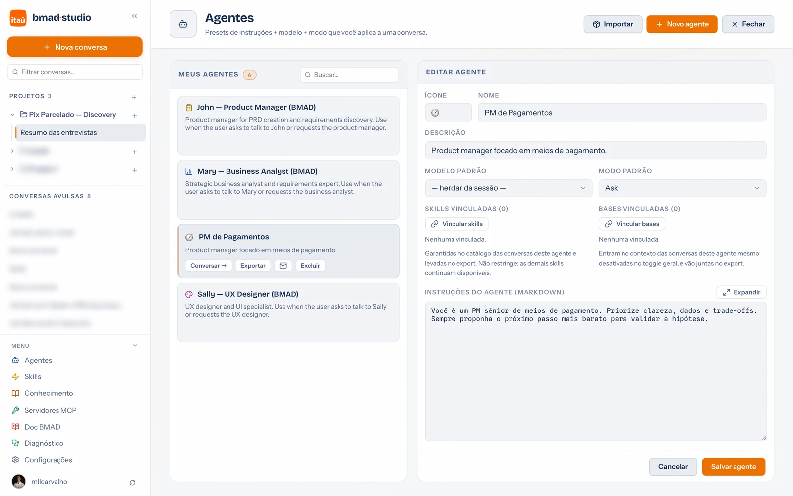

Guia de uso · 06
Agentes
Um agente é um preset completo de papel: instruções + modelo padrão + modo + skills e bases de conhecimento vinculadas. Onde a skill é uma tarefa, o agente é uma pessoa — "PM de Pagamentos", "Analista de riscos", "Redator do relatório mensal".

Como criar
- Menu da sidebar → Agentes → + Novo agente.
- Nome e ícone — o emoji aparece nos seletores do chat.
- Instruções — o papel em si: quem o agente é, como responde, o que prioriza, o que nunca faz. É o campo que mais importa.
- Modelo e modo padrão — opcionais: toda conversa com esse agente já começa neles (ex.: um "Dev sênior" pode nascer no modo Agent com modelo premium).
- Skills e bases vinculadas — o que ele leva junto: as skills entram ativas nas conversas dele, e as bases entram no contexto mesmo desligadas no toggle geral.
Como usar na conversa
- Na barra superior da conversa, clique na pílula do agente ("Sem agente", quando nenhum está ativo) e escolha na lista — vale a partir da próxima mensagem, e dá para trocar no meio.
- Um projeto pode ter agente padrão: toda conversa nova dele já nasce com o papel certo.
- As personas BMAD (analista, PM, arquiteto, dev, revisor, UX…) já vêm registradas — as ações BMAD selecionam a persona certa automaticamente. Quais aparecem nos seletores é configurável em Configurações.
Party mode: vários agentes na mesa
O comando /bmad-party-mode coloca vários agentes debatendo na mesma
conversa, um balão por persona — o PM defende o escopo, o arquiteto aponta riscos,
o analista cobra dados. Ótimo para simular a reunião de alinhamento antes da reunião de
verdade. O modo respeita a sua seleção de agentes habilitados.
Importar do VS Code
Já tem chat modes configurados no VS Code (arquivos .chatmode.md
do repositório ou do perfil)? A página de Agentes lista todos na seção "Chat modes do VS Code" —
um clique em Importar → transforma cada um em agente do portal.
Exportar, enviar por e-mail e importar
- Exportar — baixa o agente como
.agent.json; se ele tem skills ou bases vinculadas, vira.agent.zipcom tudo dentro — quem importa recebe o pacote completo. - Enviar por e-mail (ícone ✉️) — abre o cliente de e-mail com o arquivo já anexado. Sem cliente com anexo automático, o portal salva o arquivo e abre a pasta.
- Importar — no topo da página, aceita
.agent.jsone.agent.zip. Reimportar atualiza o agente existente em vez de duplicar.